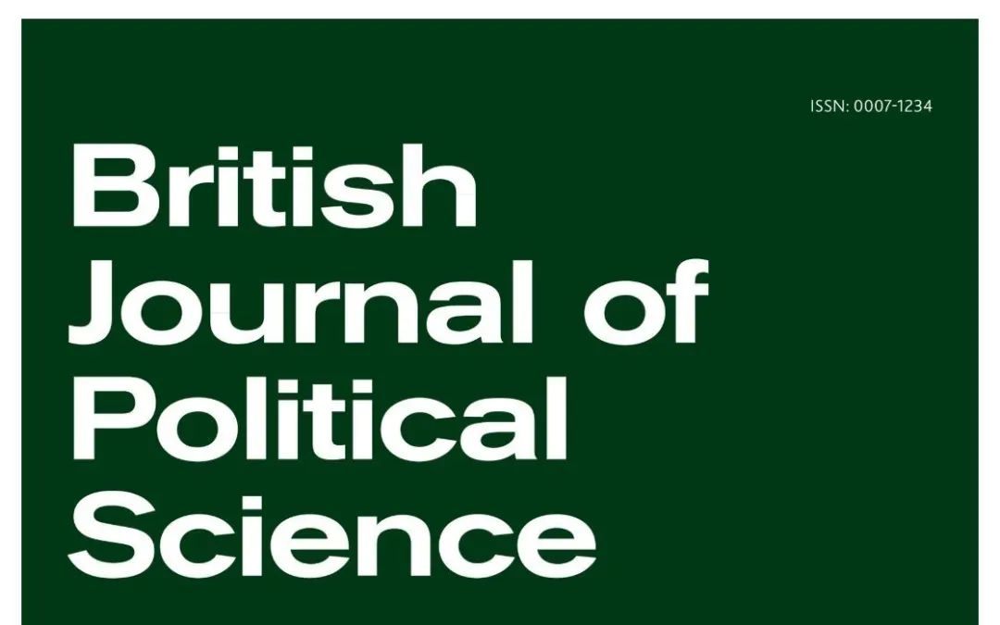
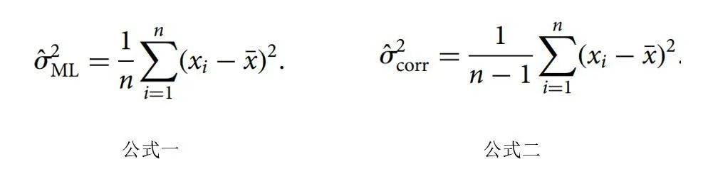
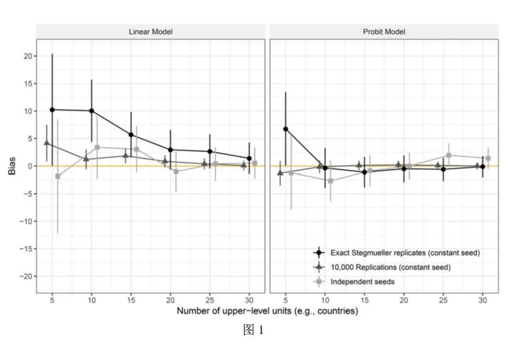
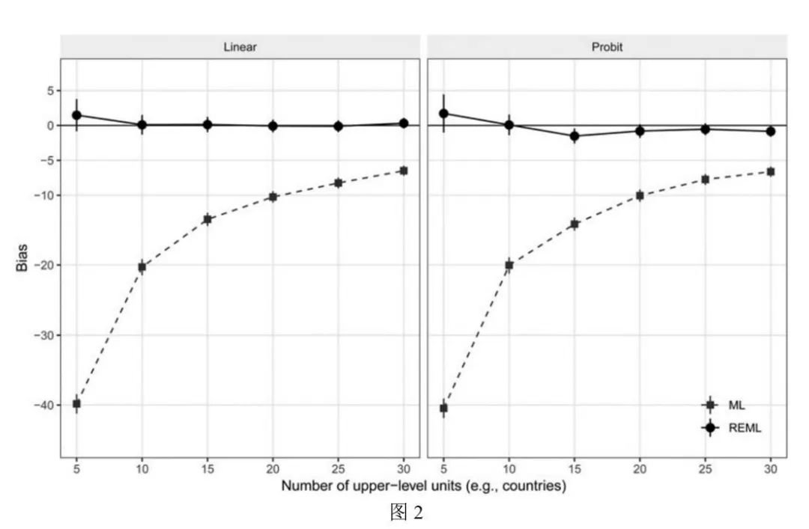
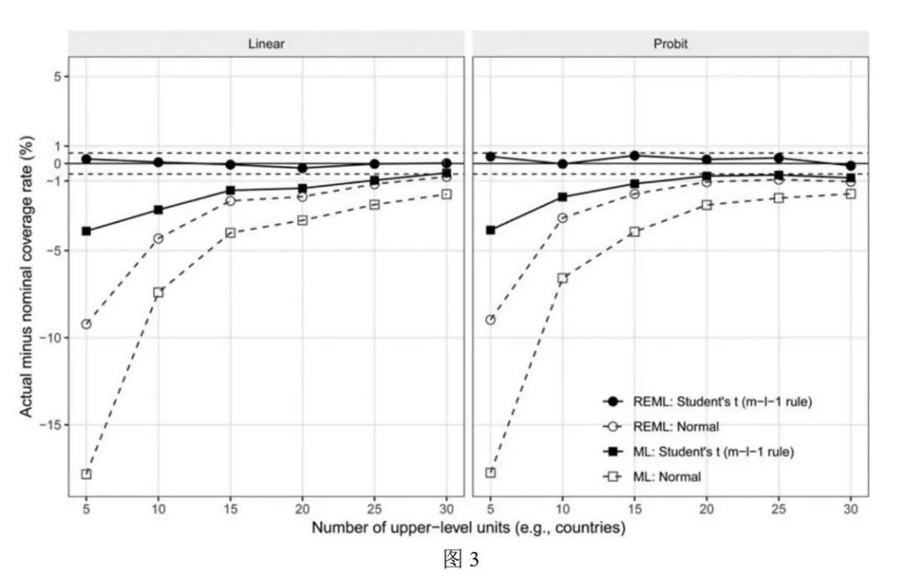
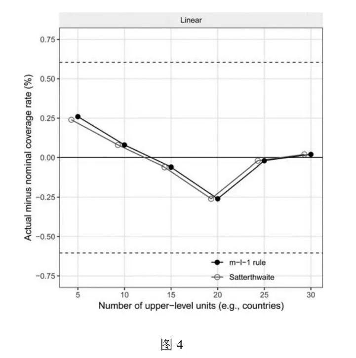
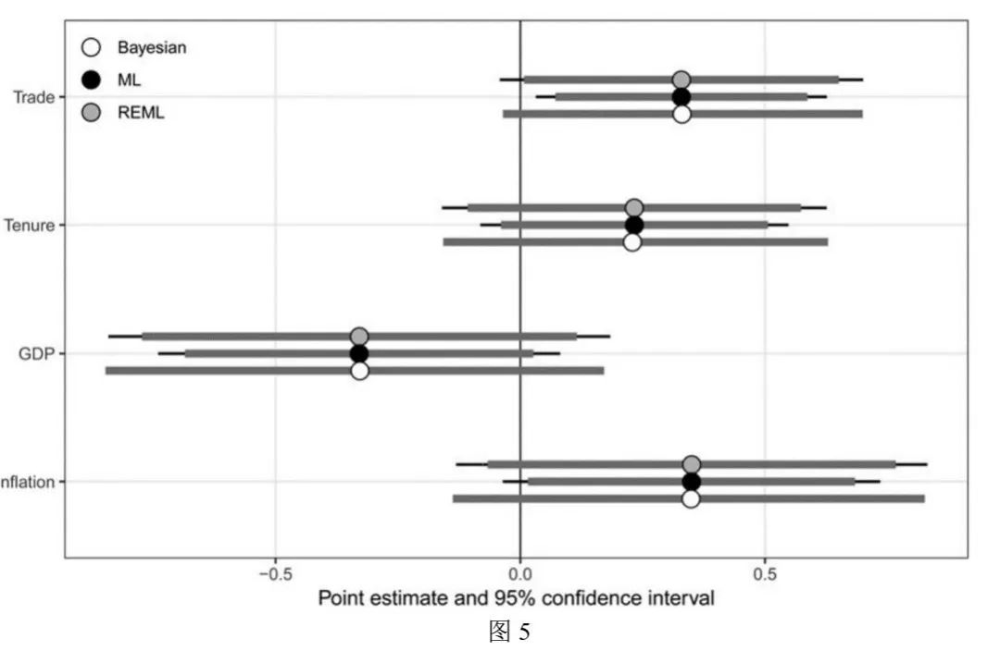

收录于合集
文献来源： Martin Elff, Jan Paul Heisig, Merlin Schaeffer and Susumu Shikano, “Multilevel Analysis with Few Clusters: Improving Likelihood-Based Methods to Provide Unbiased Estimates and Accurate Inference, ” British Journal of Political Science( May 2020), pp. 1–15.
作者简介： Martin Elff，泽佩林大学政治与社会科学系教授；Jan Paul Heisig，柏林社会科学研究中心健康与不平等研究项目组研究员；Merlin Schaeffer，哥本哈根大学社会学系副教授；Susumu Shikano，康斯坦兹大学政治与公共行政系教授。
编者按： 本期合辑是上面四位作者针对2013年Stegmueller发表在AJPS上文章的讨论，前文链接如后：方法论衡 | Daniel Stegmueller：国家—个人嵌套的多层模型——两种统计学派的视角。

多层模型在社会科学研究中应用非常广泛，而大多数统计软件估计多层模型的方法都是极大似然估计(MLE, Maximum Likelihood Estimation)。基于这一方法，高层样本量过少从而导致的有偏估计引起了大量学者的注意。Stegmueller于2013年发表的经典文章论证了MLE方法在估计少量高层样本时候的系统偏差，因此得出贝叶斯学派的方法比频率学派的方法能够产生更好估计的结论。但是本文作者认为，通过改进Stegmueller所使用的频率学派方法，可以得到和贝叶斯学派的结果具有同样准确性的估计。
准确估计与推断的理论基础
对线性模型来说，MLE方法得到的结果是无偏估计量，但是对于广义线性模型来说则并非完全如此。特别是对于分层的广义线性模型来说，因样本量过小而导致的估计偏误确实存在。众所周知ML估计的样本方差（公式一）是有偏的，因此人们往往使用修正的估计量来估计总体方差（公式二）

尽管ML估计是有偏的，人们却不得不使用这一估计，因为这关系到后来的协方差估计的标准误以及其他相关统计量的计算。那对此人们就没有任何解决办法了吗？Patterson and Thompson（1971）贡献了一种方法：限制性极大似然估计（REML，Restricted（or Residual）Maximum Likelihood Estimation），而且如MLwiN，R，Mplus以及Stata等统计软件都已经推出了这一方法的相关程序与软件包。REML方法对MLE方法的替代着实改善了频率学派在分层模型估计上的弱势。
MLE和REML方法都有这样一个假设，即检验统计量服从正态分布。这一假设基于中心极限定理。但是对于分层模型来说，这一前提假设并不满足。Wald检验统计量可以用来检验回归模型的协方差系数显著性，对于n个观测值，k个变量的回归模型来说，相比于正态分布而言，这一统计量更近似服从自由度为n-k-1个自由度的t分布。就分层模型而言，作者称之为m-l-1法则，其中m代表高层样本量，l代表高层样本特征变量数。
这一法则在p值的估计上会比正态分布假定要更加保守。尽管这一法则更为合理，但是运用此法则的实证研究并不多，而如Stegmueller的研究也是部分由于这个原因从而产生了频率学派统计推断的较差结果。这一法则还有其他替代性的估计方法，例如Giesbrecht和Burns基于Satterthwaite方法发展出的单限制t检验，以及Fai和Cornelius对此进行推广而得到的多重t检验F统计量。由于当m-l-1法则不适用的情况下，Satterthwaite方法能够提供近似的自由度估计，故本文作者使用这一方法作为替代，但是目前仅有SAS软件能够提供这一程序。
基于上述讨论，作者认为，Stegmueller的研究之所以会得出如此结论，其一是因为他使用了估计有偏的MLE方法而非REML方法；其二是因为他使用正态分布而非t分布来假定统计量。这两个操作导致Stegmueller在使用频率学派方法进行估计的过程中产生了较大偏误。
蒙特卡罗模拟的改进
作者认为，Stegmueller发现的ML参数估计结果非常具有欺骗性。这是由于模拟数据数量不够，同时恰好产生了较为极端的情况。此外Stegmueller设置了12345的随机数种子，因此在无意间造成了结果的系统偏差。（编者注：设定随机数种子后，虽然模拟数据的产生具备了可重复性，但是也正因为如此，使得随机模拟变得不再“完全随机”）。作者也同样关注了组间相关系数（ICC，intra- class correlation），由于发现ICC取值为0.05,0.10，0.15时所产生的结论并未发生变化，因此仅利用0.10的ICC值进行研究。
蒙特卡罗分析的基本理念是通过一个已知的数据生成过程（DGP，data-generating process）来生成大量的模拟数据集，并以此来研究估计量的性质。当产生的数据量越大时，其产生的估计量越接近真实值。因此，依靠随机产生的数据集来进行统计推断有点冒险，因为蒙特卡罗模拟同样会产生抽样误差，这种不确定性与传统的参数估计是一样的。而Stegmueller通过DGP产生的数据量过少，这是他的研究出现问题的最主要原因。

图1是对点估计结果的偏差及偏差估计的置信区间进行的可视化。左边是线性模型，右边是probit模型（广义线性模型的一种）。图中可以看出，黑色圆点代表的线是重复Stegmueller的研究的结果，与他2013年的研究所得到的结果是一致的：在高层样本量较少的情况下产生了较大偏差。浅黑色三角点代表基于更大数据量的模拟数据集的估计，而此时估计的偏差减小了很多。但是上述两种固定随机数种子的操作所造成的偏差都是正向的。而灰色方形点是作者不固定随机数种子，并使用较少数据量而产生的结果。从图中可以看出，Stegmueller所得出的ML估计存在系统性误差的结果在这里消失了。因此，并非是ML估计产生了有偏结果，而是因为Stegmueller在技术上的操作不经意地产生了如此结论。也即Stegmueller的研究犯了I型错误（即正确的零假设被拒绝）。
图2是对REML和MLE方法在同一模拟数据集上进行估计的比较。从图中可以非常明显的看出，ML方法在分层模型的估计上，特别是当高层样本量越少时，产生的偏差极大。而REML方法却能够非常明显的改善这一情况。对于线性模型和广义线性模型来说，REML都能削减误差。

图3展示了几种情况下的双侧95%置信区间覆盖率，0是最优值，表明模拟数据估计的置信区间覆盖率和名义上覆盖率是相同的。图中0线附近的虚线表示具有成功概率p=0.95，尺寸参数n=5000的二项分布的95%置信区间的上下限。在两条虚线以内的估计值都可视作和名义值没有统计学意义上的显著差异。
从图上可以看出，空方形点代表的基于正态分布的ML估计所产生的偏差是最大的，特别是当高层样本量很少的情况，估计偏差远大于其他几种设定。而将估计方法变为REML估计时，尽管依然存在较大偏差，但是表现却比ML估计要好得多。当设定估计量服从m-l-1法则的t分布时，ML估计和REML估计的结果就更加接近真实值，特别当采用REML估计方法时，哪怕是高层样本量在5的时候，估计量也没有超出规定的置信区间。

图4是比较m-l-1法则和Satterthwaite方法在估计上的差异。两种方法在估计上差异非常小，而且所有的估计值都在置信区间（虚线）以内，比较贴近真实值。因此，目前来看这两种方法不分优劣，需要在以后的数据分析中才能进一步考察两种方法的优势和劣势。

重复实证研究
基于以上讨论，作者对Stegmueller研究中的实证检验进行再重复。（实证的内容不再重复赘述，有需要的读者请前往前文链接的文章了解）。
图5展示了基于ML、REML和贝叶斯方法对贸易、任期、GDP以及通货膨胀的协方差系数的估计。图中均使用95%置信区间（贝叶斯统计中称为可信区间），较粗的线假定统计量服从正态分布，而较细的线假定统计量服从m-l-1个自由度的t分布。从图中可以非常明显的看出，REML方法要更为保守，特别是基于m-l-1个自由度的t分布假设的REML估计和贝叶斯估计的结果几乎相同。这证明了频率学派的方法，在使用更为准确的估计方法和更服从实际情况的分布假定后，与贝叶斯方法还是不相上下的。

结论
相当一批文献讨论贝叶斯方法和频率方法在分层模型应用中的差异，而Stegmueller的研究更是论证了贝叶斯方法的优越性。但是本文的作者却推翻了这一结论，将频率学派也推进到了和Stegmueller的贝叶斯学派相当的位置（换句话说，频率学派在争论中又扳回了一局）。基于本文的研究，作者对蒙特卡罗研究提出了三个建议：其一、数据分析员和读者都需要关注到蒙特卡罗模拟本身存在的抽样误差；其二、当模拟数据量较少时，基于蒙特卡罗模拟方法的统计推断要更为小心；其三、当在不同的条件下设定相同的随机数种子，会导致这些研究产生一定的相关性，进而造成系统偏差。
编译：刘天祥 审校：陆屹洲 编辑：康张城
【政文观止Poliview】系头条号签约作者